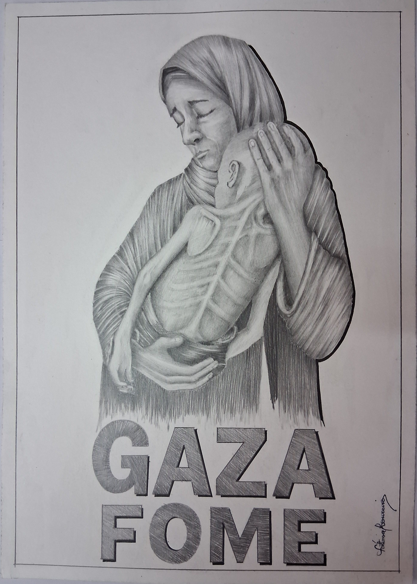
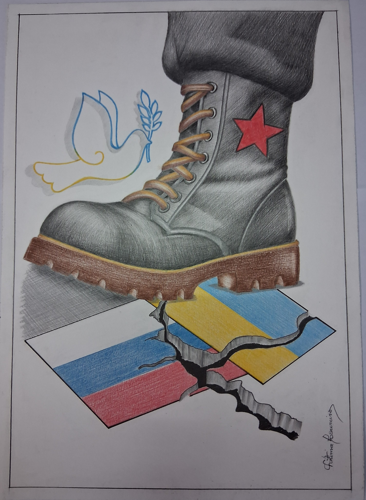

Gaza Fome — O desenho retrata uma mãe que segura nos braços o filho esquelético, frágil e moribundo, uma imagem que traduz de forma direta o sofrimento humano provocado pela guerra em Gaza.
A expressão da mãe, de olhos fechados e semblante dorido, revela desespero e impotência, mas também ternura e amor incondicional. O abraço assume-se como último gesto de proteção, um refúgio num cenário de destruição.
O corpo da criança, marcado pela fome e doença, mostra a consequência mais brutal da guerra: a perda da infância, da saúde e da vida.
Ao colocar a palavra GAZA FOME em destaque, o desenho reforça a sua função de denúncia, transformando a imagem numa voz contra a violência e a indiferença.
Este trabalho não é apenas uma representação figurativa, mas um manifesto visual, que desperta empatia e convida à reflexão sobre a dignidade humana e a urgência da paz.
Obra da artista: Fátima Loureiro

Bota e Pomba da Paz — No silêncio da folha, uma bota ergue-se pesada, símbolo de poder e domínio, esmagando o chão onde duas bandeiras se cruzam — a Rússia e a Ucrânia, rasgadas pela violência, pelo confronto, pelo peso da guerra.
As cores que deviam ser identidade e orgulho tornam-se fragmentos partidos, estilhaços de um território dilacerado.
Mas, na delicadeza de um traço leve, uma pomba surge. Ela não carrega armas, não impõe medo. Traz apenas um ramo de oliveira, frágil, mas eterno, como um sussurro que insiste em lembrar que a humanidade só se reencontra no diálogo, no respeito e na empatia.
O desenho denuncia e, ao mesmo tempo, sonha. Mostra-nos que a força bruta pode dominar, mas nunca será maior do que a coragem de acreditar num amanhã sem muros nem trincheiras.
Que a imagem da pomba ressoe mais alto do que o peso da bota. Que o chão rachado se transforme em ponte. Que as bandeiras deixem de se rasgar para se entrelaçarem no gesto maior da Paz.
Porque a verdadeira vitória não nasce do esmagar, mas do compreender. Não nasce da guerra, mas do encontro.
E assim, entre o grafite e a cor, levanta-se uma mensagem urgente: a humanidade só floresce quando escolhe a Paz.
“O peso da guerra rasga a terra. Só a pomba ousa lembrar que a verdadeira força é a Paz.”
Obra da artista: Fátima Loureiro
Gaza - Fome e Paz
Gaza em ruínas, a infância calada.
Desenho de observação sobre o drama humano em Gaza.
A paz é o caminho.
Uma reflexão visual sobre a violência e a esperança.